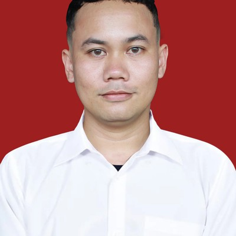

Profil · Digital Transformation Consultant
Konsultan transformasi digital untuk pemerintah & bisnis — menggabungkan pengalaman langsung sebagai praktisi perencanaan pembangunan daerah dengan solusi digital modern: website profesional, AI automation, dan optimasi SEO.

Berawal dari latar belakang Teknik Sipil di Universitas Gunung Leuser Aceh, saya membangun pemahaman mendalam tentang infrastruktur dan pembangunan fisik — fondasi yang kemudian membawa saya ke jalur fungsional Perencana, dengan fokus pada bagaimana pembangunan daerah direncanakan, dianggarkan, dan dievaluasi secara sistematis.
Sejak Desember 2025, saya bertugas sebagai Perencana Ahli Pertama (P3K) di Bappeda Kabupaten Aceh Tenggara — terlibat langsung dalam penyusunan RKPK, koordinasi lintas 51 OPD, dan review teknis dokumen anggaran.
Dari pengalaman itu, saya melihat langsung kebutuhan nyata: instansi pemerintah dan pelaku bisnis di daerah butuh solusi digital yang praktis, bukan sekadar teori. Itulah yang mendorong saya mengembangkan SiRENJA dan SiRKPD — AI tools untuk ASN perencana — dan memperluas fokus konsultasi ke website profesional serta transformasi digital untuk instansi dan bisnis di luar Aceh Tenggara.
Catatan — Pengalaman di dalam sistem perencanaan inilah yang membedakan pendekatan saya: struktur dokumen, alur persetujuan, dan istilah teknis bukan sesuatu yang perlu dijelaskan lebih dulu.
Banyak instansi pemerintah dan pelaku bisnis di daerah tertinggal secara digital bukan karena tidak ingin berubah, tapi karena solusi yang tersedia sering kali tidak relevan dengan kebutuhan nyata mereka — terlalu rumit, terlalu mahal, atau dirancang tanpa memahami cara kerja pemerintahan dan bisnis di lapangan.
Misi saya adalah menjembatani hal itu: menghadirkan website profesional, otomatisasi berbasis AI, dan solusi digital lain yang benar-benar dipakai — bukan sekadar dipajang — oleh instansi pemerintah (OPD, Bappeda, Pemda) dan bisnis yang ingin naik kelas secara digital. Setiap solusi yang saya kembangkan, termasuk SiRENJA dan SiRKPD, lahir dari kebutuhan yang saya alami sendiri sebagai ASN perencana, sehingga relevan dan langsung dapat diterapkan.
Dalam jangka panjang, saya ingin terus memperluas dampak ini: membantu lebih banyak instansi pemerintah dan bisnis di berbagai daerah bertransformasi secara digital dengan cara yang praktis, berbasis regulasi, dan terukur.
Website instansi/OPD dan solusi digital yang memahami alur kerja pemerintahan — dari SIPD-RI hingga koordinasi lintas OPD.
Landing page, website profil, dan kehadiran digital untuk bisnis yang ingin tumbuh dengan fondasi yang kuat.
Desain modern, cepat, dan responsif — dibangun di atas Cloudflare Pages dengan harga transparan.
Pengembangan tools digital yang dirancang khusus untuk kebutuhan spesifik — dibuktikan lewat SiRENJA & SiRKPD.
Pemanfaatan AI untuk mempercepat pekerjaan berulang — dari asisten perencanaan daerah hingga otomatisasi proses bisnis.
Fondasi SEO yang benar sejak hari pertama — meta tag lengkap, schema markup, dan konten yang terstruktur untuk ditemukan.
Kerangka kerja konsultasi yang saya terapkan pada setiap proyek — dari kebutuhan awal hingga hasil yang terus disempurnakan.
Memahami kebutuhan, tujuan, dan konteks instansi atau bisnis Anda sebelum menentukan solusi.
Menyusun rencana solusi digital yang sesuai kebutuhan, anggaran, dan target — bukan solusi generik.
Membangun solusi — website, AI automation, atau software — dengan standar modern dan SEO-ready sejak awal.
Serah terima dan penerapan solusi ke lingkungan kerja Anda, dengan pendampingan hingga siap digunakan.
Pemantauan dan penyempurnaan berkelanjutan setelah solusi berjalan, mengikuti kebutuhan yang berkembang.
Pengalaman saya sebagai Perencana Ahli Pertama di Bappeda memberi pemahaman langsung soal cara kerja pemerintahan — bukan konsultan luar yang hanya memahami pemerintahan dari teori.
Setiap solusi yang saya kembangkan mempertimbangkan regulasi yang berlaku — Permendagri, PMK, dan peraturan teknis terkini.
SiRENJA dan SiRKPD adalah bukti nyata — dibangun, dipakai, dan terus dikembangkan berdasarkan kebutuhan pengguna sesungguhnya.
Harga jelas sejak awal, komunikasi terbuka di setiap tahap, dan pengerjaan yang mengutamakan kebutuhan Anda.
Diskusikan kebutuhan digital instansi pemerintah atau bisnis Anda secara gratis — tanpa komitmen.